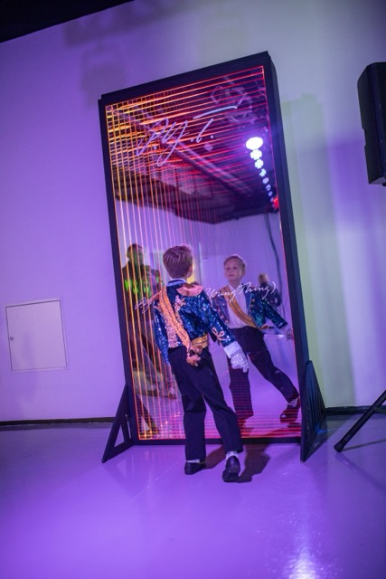
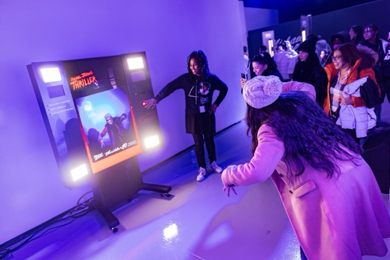
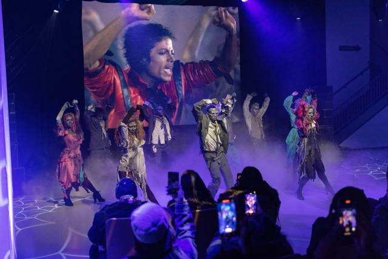
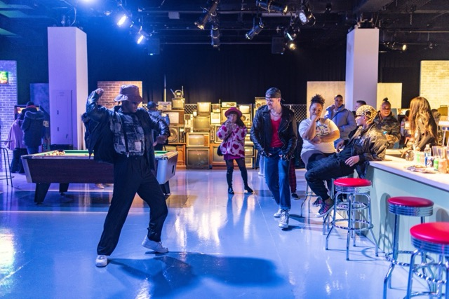
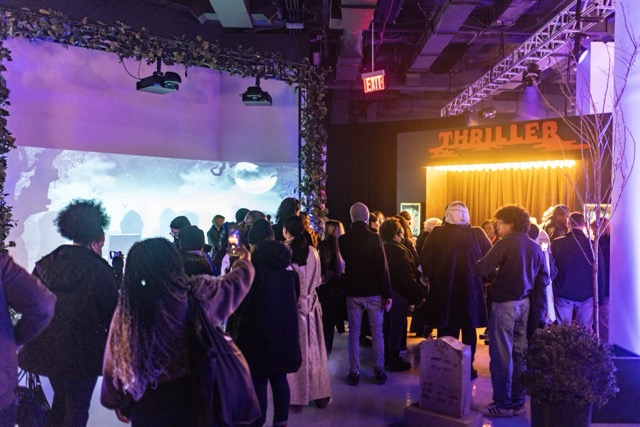

Thriller 40th Anniversary
A global campaign celebrating the 40th anniversary of Thriller, the best-selling album of all time. The rollout spanned digital content, social, and experiential activations across multiple platforms.
The campaign helped drive Thriller to #7 on the Billboard charts, generated over 30 million impressions, and marked the launch of Michael Jackson's catalog on YouTube Shorts and Snapchat. The Thriller 40 Immersive Experience was shortlisted for the 2024 Clio Music Awards in the Experience/Activation category.




